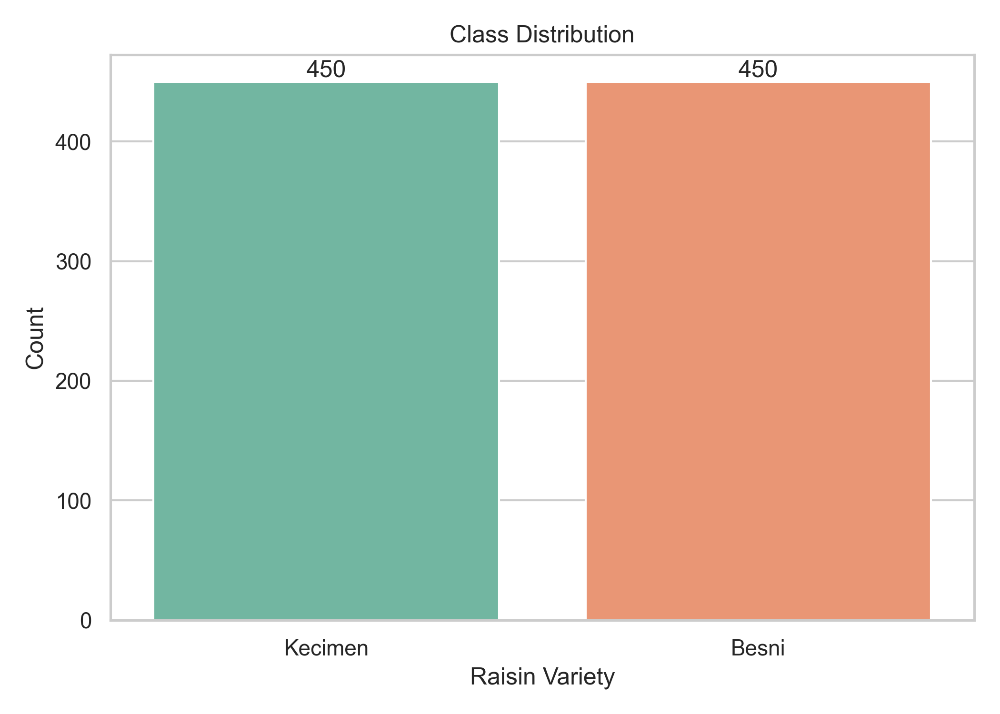
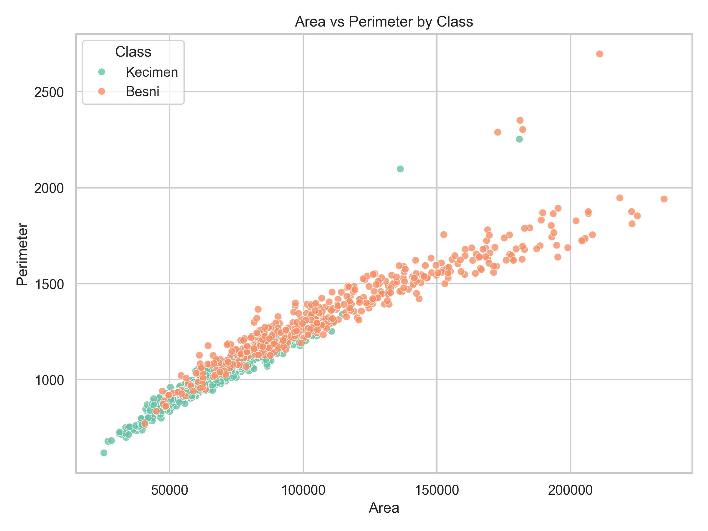
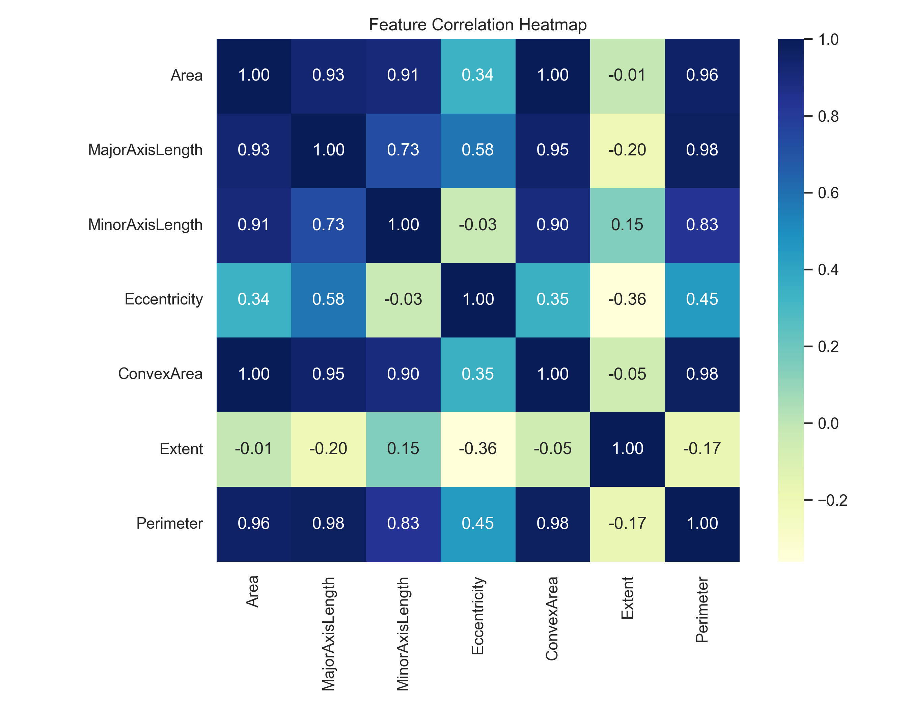
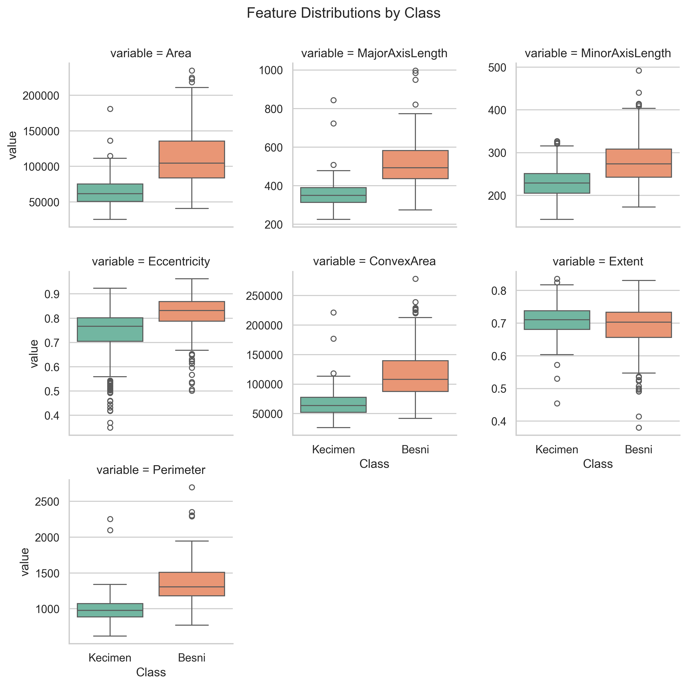
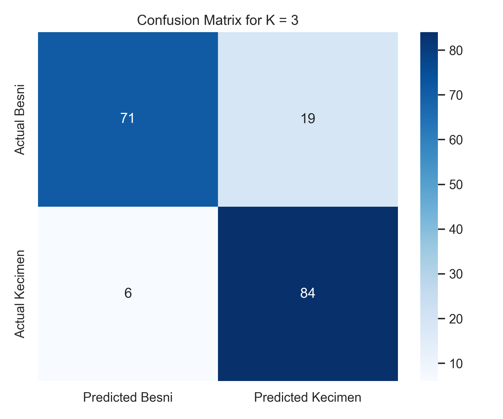
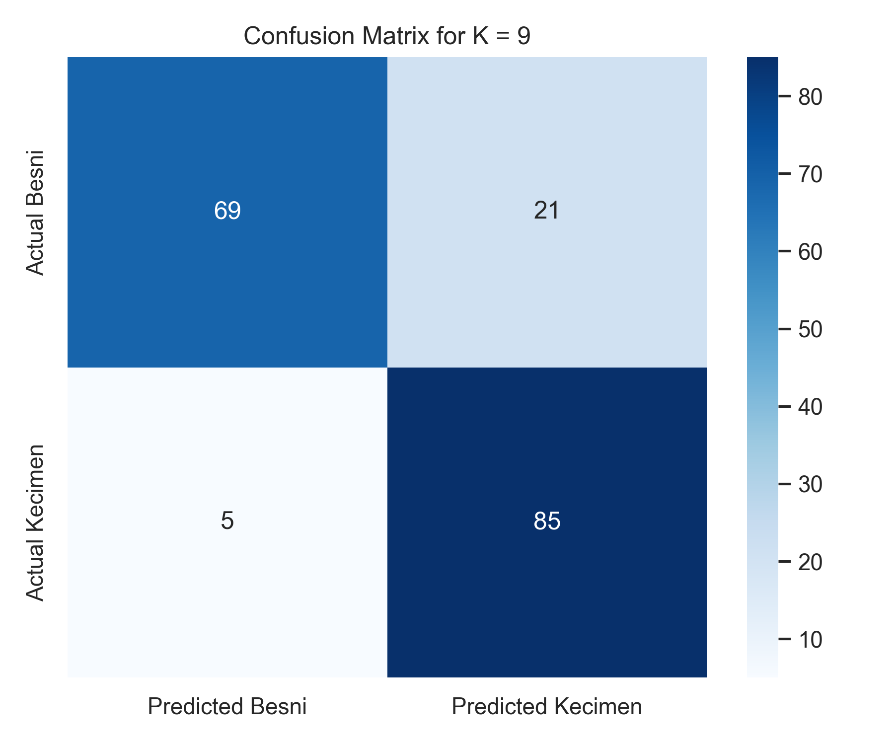

Raisin Variety Classification with K-Nearest Neighbors
This project predicts whether a raisin belongs to the Besni or
Kecimen class using seven morphological measurements. The final
result is a clean binary classification workflow built in Python, evaluated across
multiple K values, and presented with visual and numerical evidence.
900
Dataset rows
7
Numerical features
2
Balanced classes
K = 5
Best overall model
Project Summary
The UCI Raisin dataset is a strong fit for this assignment because it is real, balanced, numeric, and sized correctly for K-NN classification.
Records
900
Enough observations to train and test a meaningful classifier.
Features
7
Exactly within the assignment range of 6 to 10 measurements.
Classes
2
450 Besni and 450 Kecimen, which keeps the learning task balanced.
Best Test Accuracy
86.11%
Achieved by K = 5 with a more stable train-test gap than K = 3.
What the Model Builds
The model takes physical raisin measurements such as area, perimeter, and axis
lengths, then predicts the raisin variety. Because the input features are numeric,
K-NN can compare new raisins to previously labeled examples by distance after
standardization.
This kind of classifier is useful in agriculture and food processing because it can
support automated sorting, quality control, and variety identification with more
consistency than manual visual checking alone.
Why This Dataset Fits
It is a real-world labeled dataset from the UCI repository.
It has more than 500 records and exactly 7 numerical features.
It uses two classes, which matches the binary classification requirement.
Its features are meaningful and interpretable, so the report is easier to explain.
Data Preparation and Split
The preprocessing was intentionally simple and correct for K-NN: validate the data, preserve all useful morphology features, and standardize the scale.
Missing Values
The dataset contained 0 missing values, so no imputation step was required.
Duplicate Rows
The dataset contained 0 duplicate rows, which means no duplicate-cleaning step was needed.
Scaling
All predictors were standardized because K-NN depends on distance. Without scaling, larger-magnitude variables would dominate the model.
Train/Test Split
The data was split using stratified sampling into 720 training rows and 180 testing rows.
Split
Rows
Besni
Kecimen
Training
720
360
360
Testing
180
90
90
Model Comparison
Three odd K values were selected to compare a more flexible classifier against smoother ones while avoiding vote ties.
K = 3
A smaller neighborhood that can learn local structure strongly, but it is more likely to react to noise.
K = 5
A balanced middle option that keeps strong accuracy while reducing overfitting compared with K = 3.
K = 9
A smoother model that lowers sensitivity to noise, but in this case it also slightly lowers test accuracy.
K
Training Accuracy
Testing Accuracy
Precision (Kecimen)
Recall (Kecimen)
Misclassification Error
Generalization Gap
3
0.9181
0.8611
0.8155
0.9333
0.1389
0.0569
5
0.8903
0.8611
0.8095
0.9444
0.1389
0.0292
9
0.8778
0.8556
0.8019
0.9444
0.1444
0.0222
Best model decision: K = 5 was selected as the final model because it tied for the best test accuracy while showing a much smaller train-test gap than K = 3. That makes it the strongest balance between accuracy and generalization.
Visual Results
These charts support the report by showing class balance, feature relationships, overall structure, and the final classification behavior.

The target classes are perfectly balanced, which is ideal for a fair binary classification task.

Area and perimeter show partial separation between the classes, which suggests useful predictive structure.

The strongest positive relationships appear among size-based features such as Area, ConvexArea, MajorAxisLength, and Perimeter.

The boxplots show meaningful differences between classes, but also some overlap, which makes the task realistic.
Confusion Matrices
The confusion matrices show exactly where each K value succeeds and where it makes mistakes.

K = 3 correctly predicted 71 Besni and 84 Kecimen, but it misclassified 19 Besni and 6 Kecimen.K = 5 correctly predicted 70 Besni and 85 Kecimen, while misclassifying 20 Besni and 5 Kecimen.

K = 9 correctly predicted 69 Besni and 85 Kecimen, while misclassifying 21 Besni and 5 Kecimen.
What the Errors Mean
Across all three models, the most common error is predicting some Besni raisins as
Kecimen. This suggests that the Kecimen region in feature space may slightly absorb
borderline Besni examples when their morphology is similar.
Why K = 5 Wins
K = 5 keeps the same best test accuracy as K = 3, improves recall for Kecimen, and
lowers the train-test gap substantially. That is why it is a better final choice for
unseen data.
Conclusion and Next Steps
This project successfully demonstrates the full machine learning workflow requested in the assignment and produces credible, explainable results.
Final Conclusion
The UCI Raisin dataset is an excellent match for K-NN classification because it is
balanced, numeric, and based on real physical measurements. The final model, K = 5,
achieved 86.11% testing accuracy with a good balance between
predictive performance and generalization.
Possible Improvements
Try more K values with cross-validation.
Test distance-weighted K-NN.
Compare K-NN with logistic regression, decision trees, or SVM.
Explore PCA or feature selection for dimensional refinement.